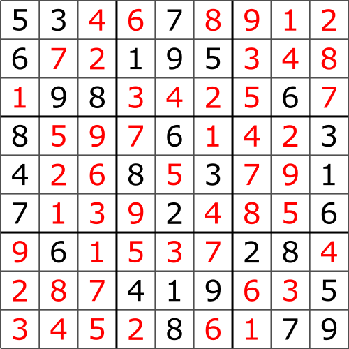

P와 NP 문제
P와 NP문제는 컴퓨터과학을 전공한 학생이라면 누구나 들어봤을 것이라 생각됩니다. 그만큼 유명하고, 계산 이론의 근간이 되는 내용이기 때문이죠. 실제로, P와 NP문제는 밀레니엄 7대 난제에 속하는 문제로 컴퓨터과학뿐만 아니라 수학자들까지도 관심이 큰 문제가 아닐까 싶습니다.
P와 NP는 결국 복잡도(Complexity)이론에서 나온 용어인데, 이를 명확히 이해하기 위해서는 먼저 짚고 넘어가야 할 것이 있습니다. 바로 "빠르다"라는 것은 무엇가를 생각해봐야 합니다. 알고리즘이 1초만에 실행된다면 빠른걸까요? 1초면 빠르다고 생각할 수 있지만 만약 데이터 하나만을 처리하는데 1초가 걸렸다면? 또한, 데이터 백만개를 알고리즘 2초만에 실행했다면? 이는 앞서 말한 알고리즘보다 느린걸까요? 여기서 무언가 이상한 점이 느껴지실거라 생각합니다. 시간은 알고리즘을 빠른지 느린지를 판가름하는 척도가 되기 어렵습니다. 수학을 잠깐 빌려서 이를 더 명료하게 설명할 수 있습니다.
함수 $f_1(x) = x$, $f_2(x) = 2x^3 + x^2 + x$가 있다고 합시다. 해당 함수들은 들어온 입력에 대해서 정해진 계산을 해야한다는 점에서 알고리즘으로 비유할 수 있습니다. 만약 $x$가 1, 하나이고 $f_2(1)$을 거쳐야한다고 했을 때, 우리는 식에 있는 $x$ 대입을 3번을 해서 답을 구합니다. 반면에, $f_1(x)$는 1번만 대입하면 됩니다. 여기서 $x$가 1, 하나가 아닌 1, 2, 3, ..., 100만까지 있고, $f_1(x)$에서 이를 처리해야한다고 가정해보면 시간은 앞서 말한 $f_2$보다는 오래 걸릴 것입니다. 하지만 대입은 1번만 하면 되는 함수인거죠. 즉, 알고리즘은 입력되는 데이터 크기에 비해서 얼마나 빠르게 계산되는가가 "빠르다"라고 판별하는 기준입니다.
이런 관점에서, 우리는 두 가지 구분을 합니다.
| 구분 | 예시 | $n = 100$일 때 대략 |
|---|---|---|
| 다항 시간 | $n$, $n^2$, $n^3$ | $10^2 \sim 10^6$ 단계 |
| 지수 시간 | $2^n$, $n!$ | $2^{100} \approx 10^{30}$ 단계 |
다항 시간은 흔히 빠르다라고 보는 범주에 있고, 지수 시간은 그렇지 않습니다. $n=100$인 경우, $2^{100}$은 초당 1조번을 계산할 수 있는 컴퓨터로도 우주의 나이보다 훨씬 오래걸립니다. 다항 시간으로 분류되는 알고리즘들은 $n$이 아무리 커져도 그런 경우가 발생하지 않기 때문에 다항시간 안에 풀리면 효율적이다라고 말합니다.
이제 저희는 $P$에 대해서 얘기할 수 있습니다. $P$는 Polynomial time의 약자로, 다항시간 안에 풀 수 있는 문제들의 집합이자 복잡도 클래스라고도 부릅니다. 흔히 아는 정렬 문제는 $P$에 속한다는 말은 $P$가 집합이기에 성립되는 말이고, 정렬 문제는 $P$ 클래스 라는 말은 복잡도 클래스로도 불리기에 성립하는 말입니다.
$P$에 속하는 문제들을 좀 더 얘기해보자면, 앞서 말한 정렬 문제는 $O(n\log(n))$으로 다항 시간에 속하고, 최단 경로를 찾는 문제는 다익스트라 알고리즘에 의해 가장 쉬운 구현으로 $n^2$이 되고, 소수 판정 문제 같은 경우에는 AKS 알고리즘에 의해 P임이 증명되었습니다.
다음으로 NP는 Nondeterministic Polynomial time의 약자로, 직역하면 다항시간인지 결정되지 않은 문제들의 집합이며, 좀 더 의미를 부여해서 말해보자면 아직 다항시간인지 아닌지 밝혀지지 않은 문제들입니다. 가장 오해를 많이 하는데 Not Polynomial의 약자일 것이라 생각해서 다항시간이 아닌 문제들일 것이라 생각하는데 그렇지가 않습니다.
그리고 $P = NP$인가는 밝혀지지 않았지만 확실한 것은 NP는 P의 superset입니다. 여기까지 설명만 들으면 왜 P가 NP의 진 부분집합인지 납득이 안가실 겁니다. 그 이유는 NP는 "다항시간으로 풀 수 있는지 모른다" 뿐만 아니라 "다항시간 내에 답이 맞음을 검증할 수 있다"라는 정의도 가지기 때문입니다. 예를 들면, 스도쿠는 정답을 찾기 위해 각 비어진 칸에 숫자를 채우는 알고리즘은 우리가 나이브하게 생각해봐도 어려울 거 같고 다항시간에 풀기 어려워 보입니다. 하지만 누군가가 스도쿠를 풀었다고 가져왔을 때, 그게 맞게 풀었는지는 우리가 한 줄씩 각 숫자가 unique(유일)한지만 검증하면 되므로 $O(n)$, 다항 시간내에 정답임을 검증할 수 있을 거 같습니다. 이런 문제를 NP라고 부릅니다.

그러면 또 남을 의문점이 P는 다항시간으로 풀 수 있음이고, NP는 다항시간으로 풀 수 있는지 모른다이면 성질이 다른 거 아니냐?라고 생각할 수 있지만, 집합의 관점에서 벤 다이어그램을 그려봤을 때,
P와 교집합이 없으려면 다항시간내에 풀 수 없다는 성질이 있어야하지 풀 수 있는지 모른다는 성질이 있으면 안됩니다. 심지어 NP가 만약에 다항시간으로 풀 수 있다고 밝혀지게 되면 그 문제는 P가 됩니다. 즉, $P = NP$가 됩니다. 현재 학계가 바라보는 전망이나 저의 개인적인 의견을 비추자면 P는 NP가 아닐 가능성이 높습니다. 다만, 아직 그 증명이 나오지 않았습니다. 예전에 대학교에서 알고리즘 수업을 들으면서 교수님이 하신 말씀이 "$P = NP$라면 우리는 모든 암호체계를 풀 수 있고, 주식 예측을 정확하게 할 수 있을뿐만 아니라 미래에 무슨 일이 일어날지 알 수 있다."고 했던게 기억이 납니다. 아직 저로서는 이 말을 완전히 이해하진 못했고, 검증할 수 없지만 그럴 것이라 어느정도 지레짐작은 되는 거 같습니다.